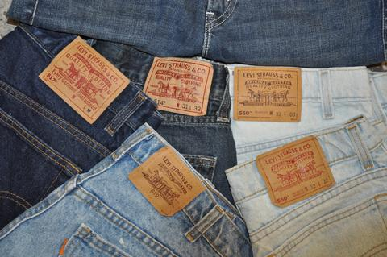

Levi's jeans

levi's jeansについて
①リーバイスの原点
1853年、ゴールドラッシュに湧くアメリカにで、金鉱で働く人々のための作業着として生まれました。労働者が過酷か環境下で働いていも壊れない、丈夫なワークパンツが原点です。
②リーバイスの型番
まず、リーバイスジーンズの代名詞である、501が誕生。特徴はきれいなストレートシルエットとボタンフライ。その後505や511等の細めのジーンズが製作され、現代もなお受け継がれています。
1853年、ゴールドラッシュに湧くアメリカにで、金鉱で働く人々のための作業着として生まれました。労働者が過酷か環境下で働いていも壊れない、丈夫なワークパンツが原点です。
②リーバイスの型番
まず、リーバイスジーンズの代名詞である、501が誕生。特徴はきれいなストレートシルエットとボタンフライ。その後505や511等の細めのジーンズが製作され、現代もなお受け継がれています。